from datetime import datetime
datetime.today().strftime("%Y-%m-%d %H:%M:%S")'2022-09-25 00:38:55'Jialei Duan ![]()
Human blastoids provide a readily accessible, scalable, versatile and perturbable alternative to blastocysts for studying early human development, understanding early pregnancy loss and gaining insights into early developmental defects.
from datetime import datetime
datetime.today().strftime("%Y-%m-%d %H:%M:%S")'2022-09-25 00:38:55'import sys
sys.path.append("/Users/jialei/Dropbox/Data/Projects/UTSW/Scripts/utilities")
sys.path.append("/project/GCRB/Hon_lab/s166631/00.bin/utilities/")import re
from pathlib import Path
import harmonypy as hm
import matplotlib.pyplot as plt
import numpy as np
import pandas as pd
import scanpy as sc
import scipy.sparse
import seaborn as sns
import umap
from fast_tsne import fast_tsne
from matplotlib import __version__ as mpl_version
from sklearn import __version__ as sklearn_version
from sklearn.decomposition import PCA
from sklearn.manifold import TSNE
from time import sleep
from utilities import (
plot_cluster_composition,
plot_embedding,
plot_embedding_expr,
plot_pca_corr,
plot_pca_variance_explained,
prepare_cluster_composition,
)params = {
"pdf.fonttype": 42,
"font.family": "sans-serif",
"font.sans-serif": "Arial",
"mathtext.default": "regular",
"figure.dpi": 96 * 1.5,
}
plt.rcParams.update(params)print(sys.version)
print("numpy", np.__version__)
print("pandas", pd.__version__)
print("scipy", scipy.__version__)
print("sklearn", sklearn_version)
print("matplotlib", mpl_version)
print("seaborn", sns.__version__)
print("umap", umap.__version__)
print("scanpy", sc.__version__)3.9.13 | packaged by conda-forge | (main, May 27 2022, 17:00:33)
[Clang 13.0.1 ]
numpy 1.22.4
pandas 1.4.4
scipy 1.9.1
sklearn 1.1.2
matplotlib 3.5.3
seaborn 0.12.0
umap 0.5.3
scanpy 1.9.1PROJECT_DIR = Path("/Users/jialei/Dropbox/Data/Projects/UTSW/Human_blastoid")
SEED = 20200416
N_COMPONENTS = 50
N_COMPONENTS_SELECTED = 24
MIN_GENES_THRESHOLD = 200
MINIMAL_NUM_CELLS_REQUIRED_FOR_GENE = 30
MINIMAL_NUM_COUNTS_REQUIRED_FOR_GENE = 60
N_THREADS = 4DATA_DIR = PROJECT_DIR / "github/data/matrices" / "LW60_LW61"
matrix_readcount_p3 = scipy.sparse.load_npz(
file=DATA_DIR / "matrix_readcount.npz"
)
matrix_readcount_p3_barcodes = np.load(
file=DATA_DIR / "matrix_readcount_barcodes.npy"
)
matrix_readcount_p3_features = np.load(
file=DATA_DIR / "matrix_readcount_features.npy"
)
cells_included = [
i.rstrip() for i in open(file=DATA_DIR / "cells_passed_mt_filtering.txt")
]
(_,) = np.where(
[i.rstrip().startswith(("LW60", "LW61")) for i in cells_included]
)
cells_included = np.array(cells_included)[_]
(cells_included_idx,) = np.where(
np.isin(element=matrix_readcount_p3_barcodes, test_elements=cells_included)
)
matrix_readcount_p3_barcodes = matrix_readcount_p3_barcodes[cells_included_idx]
matrix_readcount_p3 = matrix_readcount_p3[:, cells_included_idx]DATA_DIR = PROJECT_DIR / "raw/public" / "PRJEB11202/reformatted_matrix"
matrix_readcount_p4 = scipy.sparse.load_npz(
file=DATA_DIR / "matrix_readcount.npz"
)
matrix_readcount_p4_barcodes = np.load(
file=DATA_DIR / "matrix_readcount_barcodes.npy"
)
matrix_readcount_p4_features = np.load(
file=DATA_DIR / "matrix_readcount_features.npy"
)# merge
matrix_readcount_use = scipy.sparse.hstack(
blocks=(
matrix_readcount_p3,
matrix_readcount_p4,
),
format=None,
dtype=np.int_,
).tocsc()
matrix_readcount_use_barcodes = np.concatenate(
(
matrix_readcount_p3_barcodes,
matrix_readcount_p4_barcodes,
),
axis=0,
)
assert len(matrix_readcount_p3_features) == len(matrix_readcount_p4_features)
matrix_readcount_use_features = matrix_readcount_p3_features
matrix_readcount_use = matrix_readcount_use[
:, np.argsort(a=matrix_readcount_use_barcodes)
]
matrix_readcount_use_barcodes = matrix_readcount_use_barcodes[
np.argsort(a=matrix_readcount_use_barcodes)
]features = matrix_readcount_use_featuresmatrix_readcount_norm = matrix_readcount_use.copy()print(
"Raw median UMIs per cell:",
f"{np.median(a=matrix_readcount_use.sum(axis=0).A1)}",
)
print(f"Number of cells before filtering: {matrix_readcount_norm.shape[1]}")
print(
"Number of features before filtering: ", f"{matrix_readcount_norm.shape[0]}"
)Raw median UMIs per cell: 11410.0
Number of cells before filtering: 11182
Number of features before filtering: 33538# filter cells
(col_idx,) = np.where(
(matrix_readcount_norm > 0).sum(axis=0).A1 >= MIN_GENES_THRESHOLD
)
matrix_readcount_norm = matrix_readcount_norm[:, col_idx]
matrix_readcount_norm_barcodes = matrix_readcount_use_barcodes[col_idx]
print(
"Number of cells after filtering: ",
f"{len(matrix_readcount_norm_barcodes)}",
)Number of cells after filtering: 11182# filter features
row_idx = np.logical_and(
(matrix_readcount_norm > 0).sum(axis=1).A1
>= MINIMAL_NUM_CELLS_REQUIRED_FOR_GENE,
(matrix_readcount_norm).sum(axis=1).A1
>= MINIMAL_NUM_COUNTS_REQUIRED_FOR_GENE,
)
matrix_readcount_norm = matrix_readcount_norm[row_idx, :]
matrix_readcount_norm_features = matrix_readcount_use_features[row_idx]
print(
"Number of features after filtering: ",
f"{len(matrix_readcount_norm_features)}",
)
print(
"After filtering, median UMIs per cell is",
f"{np.median(a=matrix_readcount_norm.sum(axis=0).A1)}",
)Number of features after filtering: 23617
After filtering, median UMIs per cell is 11409.0# normalize
matrix_readcount_norm.data = (
np.median(a=matrix_readcount_norm.sum(axis=0).A1)
* matrix_readcount_norm.data
/ np.repeat(
matrix_readcount_norm.sum(axis=0).A1,
np.diff(matrix_readcount_norm.indptr),
)
)batches = [re.sub("_[A-Z]{16}$", "", i)
for i in matrix_readcount_norm_barcodes]
(_,) = np.where([i.rstrip().startswith(("ER",)) for i in batches])
batches = np.array(batches)
batches[_] = "PRJEB11202"
print(sorted(set(batches)))['LW60', 'LW61', 'PRJEB11202']# create anndata object, logarithmized
adata = sc.AnnData(
X=np.log1p(matrix_readcount_norm.T),
obs={
"cell": matrix_readcount_norm_barcodes,
"batch": batches,
},
var={"feature": matrix_readcount_norm_features},
dtype=np.int64
)
adata.obs.index = adata.obs["cell"]
adata.var.index = adata.var["feature"]
adata.var["symbol"] = [
re.sub("^E[A-Z]{1,}[0-9]{11}_", "", i) for i in adata.var["feature"]
]adata.obs["num_umis"] = matrix_readcount_use.sum(axis=0).A1
adata.obs["num_features"] = (adata.X > 0).sum(axis=1).A1
(_,) = np.where([i.startswith("MT-") for i in adata.var.symbol])
adata.obs["num_umis_mt"] = matrix_readcount_use[_, :].sum(axis=0).A1
adata.obs.head()| cell | batch | num_umis | num_features | num_umis_mt | |
|---|---|---|---|---|---|
| cell | |||||
| ERS1079290 | ERS1079290 | PRJEB11202 | 1884175 | 2022 | 1906 |
| ERS1079291 | ERS1079291 | PRJEB11202 | 1290557 | 1942 | 1226 |
| ERS1079292 | ERS1079292 | PRJEB11202 | 1686855 | 1993 | 2271 |
| ERS1079293 | ERS1079293 | PRJEB11202 | 1181562 | 1973 | 1529 |
| ERS1079294 | ERS1079294 | PRJEB11202 | 1868361 | 1983 | 1893 |
# standardize
sc.pp.scale(adata, zero_center=True, max_value=None, copy=False)pca = PCA(
n_components=N_COMPONENTS,
copy=True,
whiten=False,
svd_solver="arpack",
tol=0.0,
iterated_power="auto",
random_state=SEED,
)
principal_components = pca.fit_transform(adata.X)with sns.axes_style("darkgrid"):
fig, ax = plt.subplots(nrows=1, ncols=1, figsize=(6, 2.5))
plot_pca_variance_explained(
x=pca.explained_variance_ratio_,
num_pcs=min(40, N_COMPONENTS),
ax=ax
)
ax.set(ylim=(-0.0025, max(ax.get_ylim())))
plt.tight_layout()
plt.show()
plt.close(fig=fig)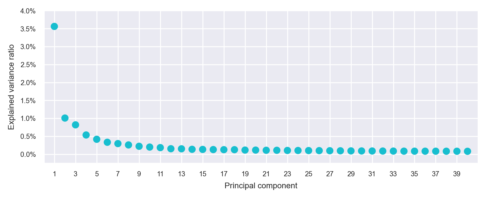
N_COMPONENTS_CORR = min(40, N_COMPONENTS)
corr_pearsonr = [
scipy.stats.pearsonr(
x=principal_components[:, i],
y=np.log1p(matrix_readcount_use[:, col_idx].sum(axis=0).A1),
)[0]
for i in range(N_COMPONENTS_CORR)
]
corr_pearsonr = pd.DataFrame(data=corr_pearsonr, columns=["corr"])
(_,) = np.where([np.sqrt(i**2) <= 0.9 for i in corr_pearsonr["corr"]])
principal_components = principal_components[:, _]batches = adata.obs["batch"].values
pd.Series(batches).value_counts()LW61 5156
LW60 4497
PRJEB11202 1529
dtype: int64ho = hm.run_harmony(
data_mat=principal_components,
meta_data=pd.DataFrame(
{"batch": batches}, index=matrix_readcount_norm_barcodes
),
vars_use="batch",
random_state=SEED,
)
principal_components_corrected = ho.Z_corr.T2022-09-25 00:39:23,807 - harmonypy - INFO - Iteration 1 of 10INFO:harmonypy:Iteration 1 of 102022-09-25 00:39:24,829 - harmonypy - INFO - Iteration 2 of 10INFO:harmonypy:Iteration 2 of 102022-09-25 00:39:25,821 - harmonypy - INFO - Iteration 3 of 10INFO:harmonypy:Iteration 3 of 102022-09-25 00:39:26,813 - harmonypy - INFO - Iteration 4 of 10INFO:harmonypy:Iteration 4 of 102022-09-25 00:39:27,906 - harmonypy - INFO - Iteration 5 of 10INFO:harmonypy:Iteration 5 of 102022-09-25 00:39:28,975 - harmonypy - INFO - Converged after 5 iterationsINFO:harmonypy:Converged after 5 iterationsprincipal_components_use = principal_components_corrected[
:, range(N_COMPONENTS_SELECTED)
]embedding_initialization = umap.UMAP(
n_neighbors=10,
n_components=N_COMPONENTS,
metric="euclidean",
min_dist=0.1,
spread=1.0,
random_state=SEED,
transform_seed=42,
verbose=True,
).fit_transform(principal_components_use)
embedding_fitsne = fast_tsne(
X=principal_components_use,
theta=0.5,
perplexity=30,
max_iter=2000,
map_dims=2,
seed=SEED,
initialization=embedding_initialization,
df=1.0,
nthreads=N_THREADS,
)UMAP(n_components=50, n_neighbors=10, random_state=20200416, verbose=True)
Sun Sep 25 00:39:28 2022 Construct fuzzy simplicial set
Sun Sep 25 00:39:28 2022 Finding Nearest Neighbors
Sun Sep 25 00:39:28 2022 Building RP forest with 10 trees
Sun Sep 25 00:39:29 2022 NN descent for 13 iterations 1 / 13
2 / 13
3 / 13
4 / 13
Stopping threshold met -- exiting after 4 iterations
Sun Sep 25 00:39:34 2022 Finished Nearest Neighbor SearchSun Sep 25 00:39:35 2022 Construct embeddingSun Sep 25 00:39:46 2022 Finished embedding
=============== t-SNE v1.2.1 ===============
fast_tsne data_path: data_2022-09-25 00:39:46.210393-461890592.dat
fast_tsne result_path: result_2022-09-25 00:39:46.210393-461890592.dat
fast_tsne nthreads: 4Read the following parameters:
n 11182 by d 24 dataset, theta 0.500000,
perplexity 30.000000, no_dims 2, max_iter 2000,
stop_lying_iter 250, mom_switch_iter 250,
momentum 0.500000, final_momentum 0.800000,
learning_rate 931.833333, max_step_norm 5.000000,
K -1, sigma -1.000000, nbody_algo 2,
knn_algo 1, early_exag_coeff 12.000000,
no_momentum_during_exag 0, n_trees 50, search_k 4500,
start_late_exag_iter -1, late_exag_coeff -1.000000
nterms 3, interval_per_integer 1.000000, min_num_intervals 50, t-dist df 1.000000
Read the 11182 x 24 data matrix successfully. X[0,0] = 26.709492
Read the initialization successfully.
Will use momentum during exaggeration phase
Computing input similarities...
Using perplexity, so normalizing input data (to prevent numerical problems)
Using perplexity, not the manually set kernel width. K (number of nearest neighbors) and sigma (bandwidth) parameters are going to be ignored.
Using ANNOY for knn search, with parameters: n_trees 50 and search_k 4500
Going to allocate memory. N: 11182, K: 90, N*K = 1006380
Building Annoy tree...
Done building tree. Beginning nearest neighbor search...
parallel (4 threads):
[> ] 0% 0s[==> ] 3% 0.02s[====> ] 6% 0.039s[=====> ] 9% 0.059s[========> ] 13% 0.079s[==========> ] 16% 0.099s[============> ] 20% 0.12s[==============> ] 23% 0.139s[================> ] 27% 0.16s[==================> ] 30% 0.18s[====================> ] 34% 0.2s[======================> ] 37% 0.221s[========================> ] 40% 0.247s[==========================> ] 44% 0.288s[============================> ] 46% 0.317s[==============================> ] 50% 0.344s[================================> ] 54% 0.367s[==================================> ] 57% 0.39s[====================================> ] 61% 0.412s[======================================> ] 64% 0.434s[========================================> ] 68% 0.457s[===========================================> ] 71% 0.479s[=============================================> ] 75% 0.505s[===============================================> ] 79% 0.529s[=================================================> ] 82% 0.551s[===================================================> ] 86% 0.573s[=====================================================> ] 89% 0.595s[========================================================> ] 93% 0.617s[===========================================================>] 99% 0.678s
Symmetrizing...
Using the given initialization.
Exaggerating Ps by 12.000000
Input similarities computed (sparsity = 0.011212)!
Learning embedding...
Using FIt-SNE approximation.
Iteration 50 (50 iterations in 0.30 seconds), cost 4.177073
Iteration 100 (50 iterations in 0.29 seconds), cost 3.838677
Iteration 150 (50 iterations in 0.29 seconds), cost 3.760842
Iteration 200 (50 iterations in 0.29 seconds), cost 3.711519
Iteration 250 (50 iterations in 0.28 seconds), cost 3.660229
Unexaggerating Ps by 12.000000
Iteration 300 (50 iterations in 0.29 seconds), cost 2.568280
Iteration 350 (50 iterations in 0.29 seconds), cost 2.112301
Iteration 400 (50 iterations in 0.39 seconds), cost 1.896454
Iteration 450 (50 iterations in 0.61 seconds), cost 1.761024
Iteration 500 (50 iterations in 0.98 seconds), cost 1.677739
Iteration 550 (50 iterations in 1.16 seconds), cost 1.621737
Iteration 600 (50 iterations in 1.46 seconds), cost 1.570712
Iteration 650 (50 iterations in 1.70 seconds), cost 1.547129
Iteration 700 (50 iterations in 2.03 seconds), cost 1.516887
Iteration 750 (50 iterations in 2.28 seconds), cost 1.494418
Iteration 800 (50 iterations in 2.45 seconds), cost 1.484496
Iteration 850 (50 iterations in 3.67 seconds), cost 1.467900
Iteration 900 (50 iterations in 3.77 seconds), cost 1.465943
Iteration 950 (50 iterations in 3.77 seconds), cost 1.452035
Iteration 1000 (50 iterations in 3.75 seconds), cost 1.452934
Iteration 1050 (50 iterations in 4.10 seconds), cost 1.448212
Iteration 1100 (50 iterations in 4.69 seconds), cost 1.438053
Iteration 1150 (50 iterations in 4.58 seconds), cost 1.433305
Iteration 1200 (50 iterations in 4.71 seconds), cost 1.424563
Iteration 1250 (50 iterations in 4.62 seconds), cost 1.427264
Iteration 1300 (50 iterations in 4.63 seconds), cost 1.442807
Iteration 1350 (50 iterations in 4.62 seconds), cost 1.413062
Iteration 1400 (50 iterations in 4.63 seconds), cost 1.418446
Iteration 1450 (50 iterations in 4.61 seconds), cost 1.403327
Iteration 1500 (50 iterations in 10.67 seconds), cost 1.410428
Iteration 1550 (50 iterations in 11.63 seconds), cost 1.404569
Iteration 1600 (50 iterations in 8.53 seconds), cost 1.412123
Iteration 1650 (50 iterations in 7.52 seconds), cost 1.407856
Iteration 1700 (50 iterations in 13.54 seconds), cost 1.409483
Iteration 1750 (50 iterations in 19.09 seconds), cost 1.404554
Iteration 1800 (50 iterations in 7.82 seconds), cost 1.400241
Iteration 1850 (50 iterations in 5.41 seconds), cost 1.403116
Iteration 1900 (50 iterations in 8.51 seconds), cost 1.400103
Iteration 1950 (50 iterations in 5.03 seconds), cost 1.398341
Iteration 2000 (50 iterations in 16.84 seconds), cost 1.392986
Wrote the 11182 x 2 data matrix successfully.
Done.
embedding_umap = umap.UMAP(
n_neighbors=20,
n_components=2,
metric="euclidean",
n_epochs=None,
init="spectral",
min_dist=0.1,
spread=1.0,
random_state=SEED,
transform_seed=42,
verbose=True,
).fit_transform(principal_components_use)UMAP(n_neighbors=20, random_state=20200416, verbose=True)
Sun Sep 25 00:42:53 2022 Construct fuzzy simplicial set
Sun Sep 25 00:42:53 2022 Finding Nearest Neighbors
Sun Sep 25 00:42:53 2022 Building RP forest with 10 trees
Sun Sep 25 00:42:53 2022 NN descent for 13 iterations
1 / 13
2 / 13
3 / 13 Stopping threshold met -- exiting after 3 iterations
Sun Sep 25 00:42:53 2022 Finished Nearest Neighbor SearchSun Sep 25 00:42:53 2022 Construct embeddingSun Sep 25 00:42:59 2022 Finished embeddingadata = sc.AnnData(
X=principal_components_use,
obs=adata.obs,
)/var/folders/yr/vrcclyl91kd_dg97yrqtwqz40000gn/T/ipykernel_2849/1122007486.py:1: FutureWarning: X.dtype being converted to np.float32 from float64. In the next version of anndata (0.9) conversion will not be automatic. Pass dtype explicitly to avoid this warning. Pass `AnnData(X, dtype=X.dtype, ...)` to get the future behavour.
adata = sc.AnnData(sc.pp.neighbors(
adata=adata,
n_neighbors=30,
n_pcs=0,
use_rep=None,
knn=True,
random_state=SEED,
method="umap",
metric="euclidean",
copy=False,
)sc.tl.louvain(
adata=adata,
resolution=1,
random_state=SEED,
flavor="vtraag",
directed=True,
use_weights=False,
partition_type=None,
copy=False,
)embedding = pd.DataFrame(
data=np.concatenate(
(adata.obs[["batch", "louvain"]], embedding_fitsne, embedding_umap),
axis=1,
),
index=adata.obs["cell"],
columns=["batch", "louvain", "x_fitsne", "y_fitsne", "x_umap", "y_umap"],
)fig, ax = plt.subplots(nrows=1 * 1, ncols=1 * 1, figsize=(4 * 1, 3 * 1))
# axes = axes.flatten()
plot_embedding(
embedding=embedding.loc[:, ["x_umap", "y_umap"]],
ax=ax,
color_values=[str(i) for i in embedding["louvain"]],
title="UMAP; louvain",
show_color_value_labels=True,
rasterise=True,
)
plt.tight_layout()
plt.show()
plt.close(fig=fig)
embedding.groupby(by="batch").size().to_frame(name="num_cells")| num_cells | |
|---|---|
| batch | |
| LW60 | 4497 |
| LW61 | 5156 |
| PRJEB11202 | 1529 |
cluster_composition = (
(
embedding.groupby(by="louvain").aggregate("batch").value_counts()
/ embedding.groupby(by="louvain").aggregate("batch").size()
)
.to_frame(name="percentage")
.reset_index()
)
cluster_composition = cluster_composition.astype({"louvain": str})
clusters_selected = list(
np.sort(embedding["louvain"].unique()).astype(dtype=str)[::-1]
)
batches_selected = list(embedding["batch"].unique())
cluster_composition = cluster_composition.astype(
{
"louvain": pd.api.types.CategoricalDtype(
categories=clusters_selected, ordered=True
),
"batch": pd.api.types.CategoricalDtype(
categories=batches_selected, ordered=True
),
}
)fig, ax = plt.subplots(nrows=1, ncols=1, figsize=(4.5, 4))
plot_cluster_composition(
cluster_composition=cluster_composition,
x="batch",
y="louvain",
ax=ax,
x_order=batches_selected,
y_order=clusters_selected,
)
plt.tight_layout()
plt.show()/Users/jialei/Dropbox/Data/Projects/UTSW/Scripts/utilities/utilities.py:762: UserWarning: FixedFormatter should only be used together with FixedLocator
ax.set_xticklabels(labels=['{:.0%}'.format(i)
matrix_cpm_use = matrix_readcount_use.copy()
matrix_cpm_use.data = (
1_000_000
* matrix_cpm_use.data
/ np.repeat(matrix_cpm_use.sum(axis=0).A1, np.diff(matrix_cpm_use.indptr))
)FEATURES_SELECTED = [
"ENSG00000181449_SOX2",
"ENSG00000156574_NODAL",
"ENSG00000111704_NANOG",
"ENSG00000147596_PRDM14",
"ENSG00000075388_FGF4",
"ENSG00000164736_SOX17",
"ENSG00000125798_FOXA2",
"ENSG00000136574_GATA4",
"ENSG00000141448_GATA6",
"ENSG00000115414_FN1",
"ENSG00000187498_COL4A1",
"ENSG00000179348_GATA2",
"ENSG00000107485_GATA3",
"ENSG00000118777_ABCG2",
"ENSG00000126353_CCR7",
"ENSG00000137869_CYP19A1",
"ENSG00000169550_MUC15"
]for selected_feature in FEATURES_SELECTED:
# print(selected_feature)
idx = np.where([i == selected_feature for i in features])[0]
values = matrix_cpm_use[idx, :].toarray().flatten()
values = np.log10(values + 1)
fig, ax = plt.subplots(nrows=1 * 1, ncols=1, figsize=(4 * 1, 3 * 1))
p = plot_embedding(
embedding=embedding.loc[adata.obs.index, ["x_umap", "y_umap"]],
ax=ax,
color_values=values,
title=f"UMAP; {selected_feature}",
show_color_value_labels=False,
marker_size=6,
sort_values=True,
)
ax_ins = ax.inset_axes((0.06, 0.70, 0.03, 0.2))
cbar = fig.colorbar(
mappable=p,
cax=ax_ins,
orientation="vertical",
label="",
ticks=range(np.ceil(max(values)).astype(int)),
)
cbar.outline.set_linewidth(w=0.2)
cbar.outline.set_visible(b=False)
ax_ins.tick_params(
axis="y",
direction="out",
length=1.5,
width=0.2,
color="#333333",
pad=1.25,
labelsize=6,
labelcolor="#4D4D4D",
)
plt.tight_layout()
plt.show()
plt.close(fig=fig)
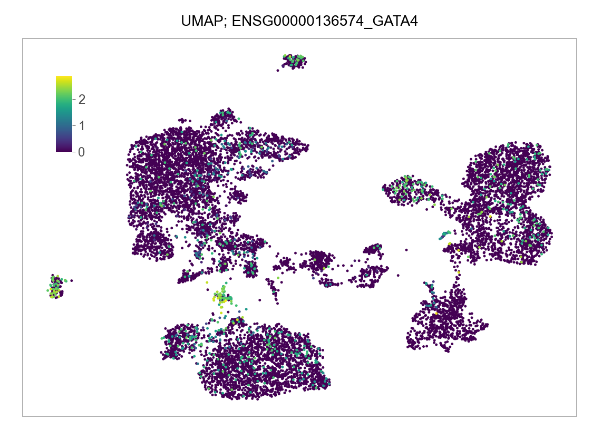
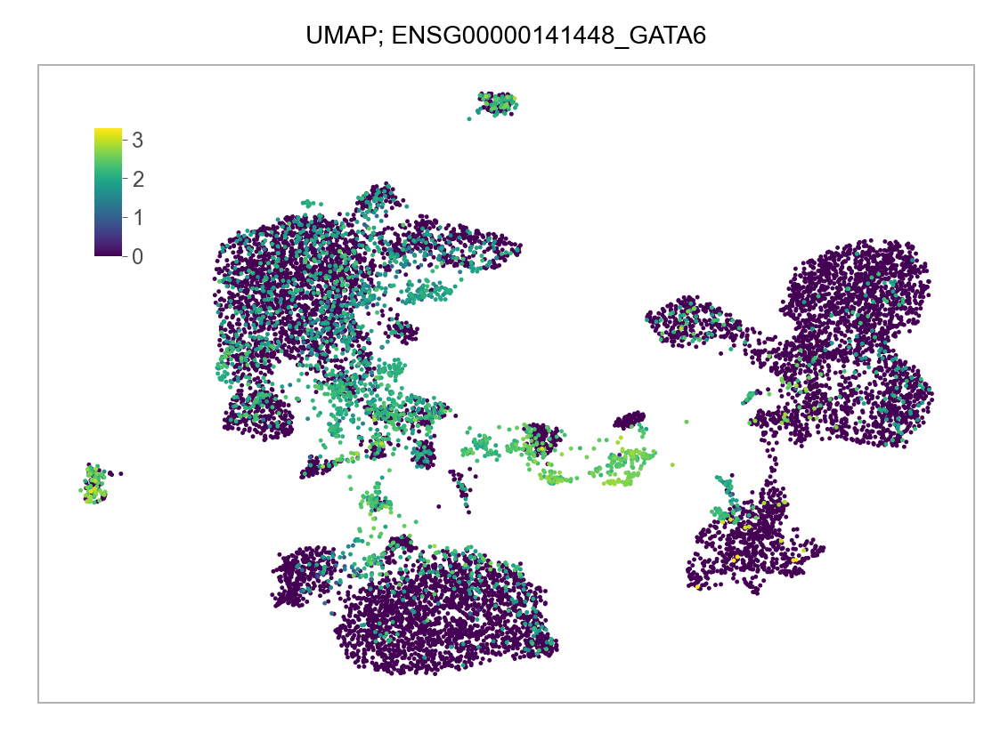
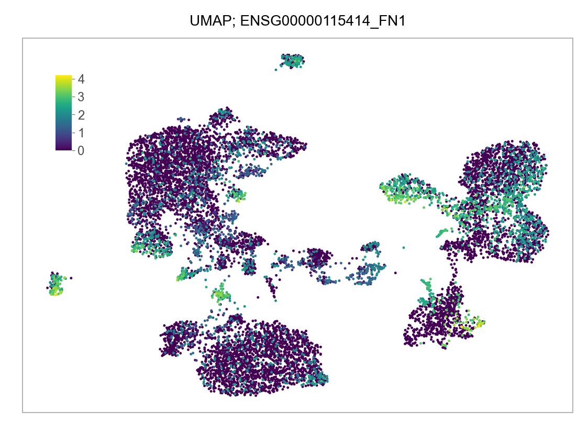
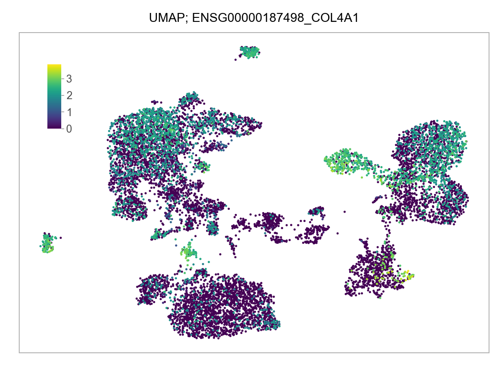
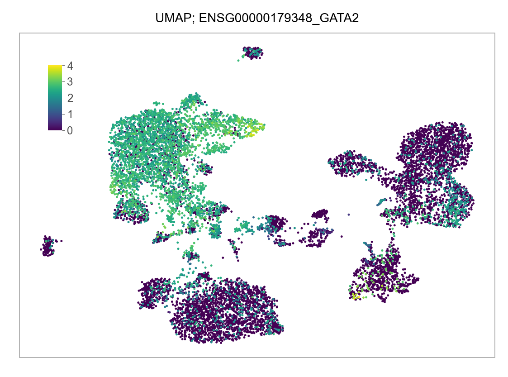
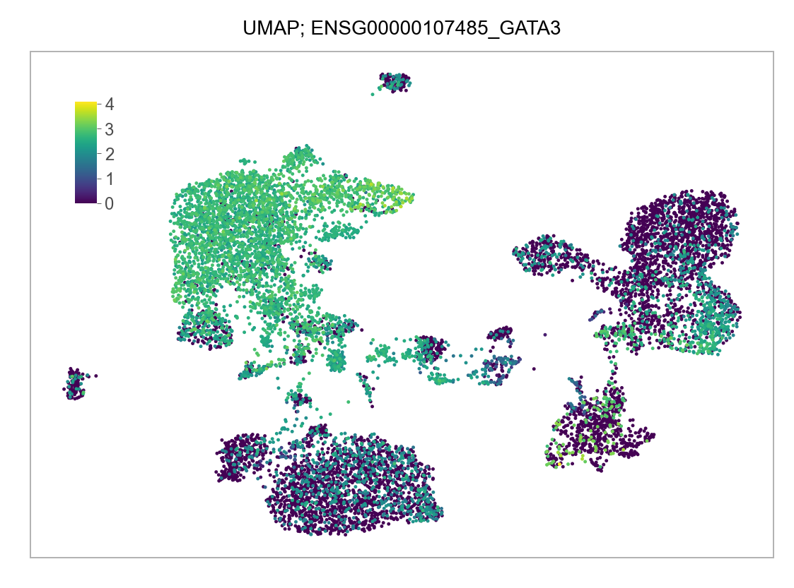
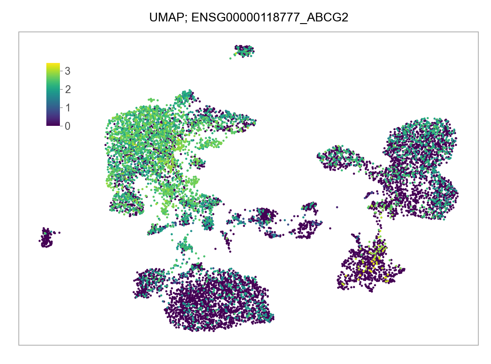
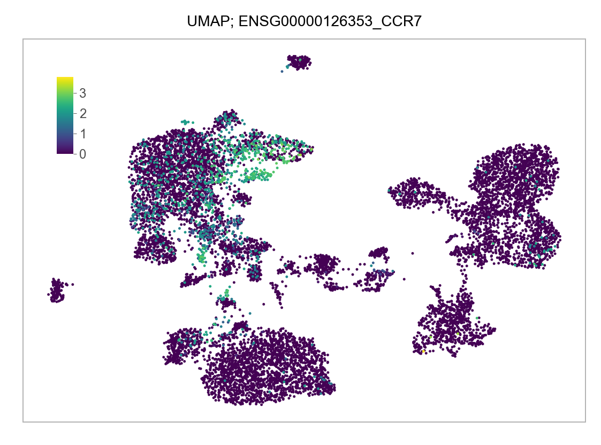
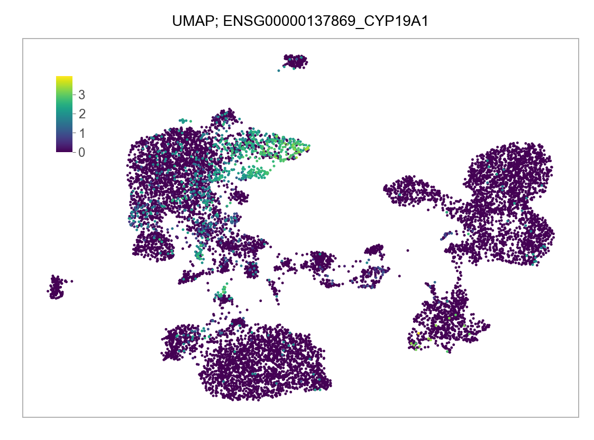
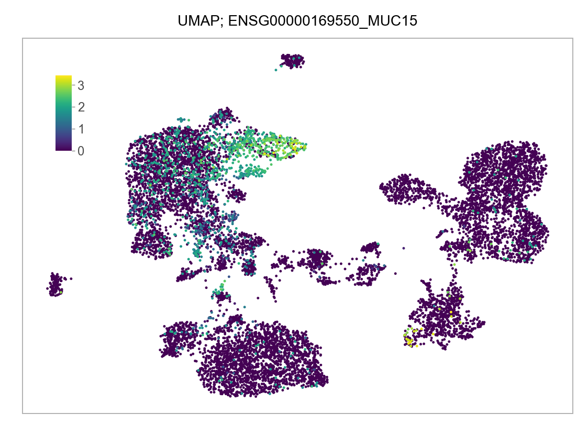
@article{yu,
author = {Leqian Yu and Yulei Wei and Jialei Duan and Daniel A.
Schmitz and Masahiro Sakurai and Lei Wang and Kunhua Wang and Shuhua
Zhao and Gary C. Hon and Jun Wu},
editor = {},
publisher = {Nature Publishing Group},
title = {Blastocyst-Like Structures Generated from Human Pluripotent
Stem Cells},
journal = {Nature},
volume = {591},
number = {7851},
pages = {620 - 626},
date = {},
url = {https://doi.org/10.1038/s41586-021-03356-y},
doi = {10.1038/s41586-021-03356-y},
langid = {en},
abstract = {Human blastoids provide a readily accessible, scalable,
versatile and perturbable alternative to blastocysts for studying
early human development, understanding early pregnancy loss and
gaining insights into early developmental defects.}
}